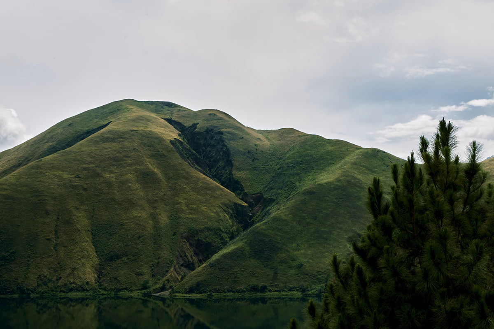
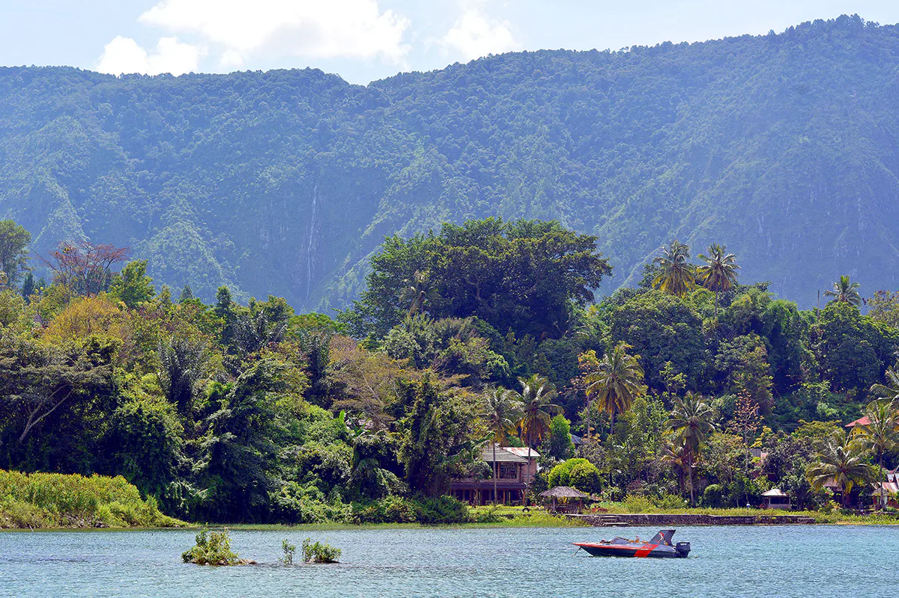
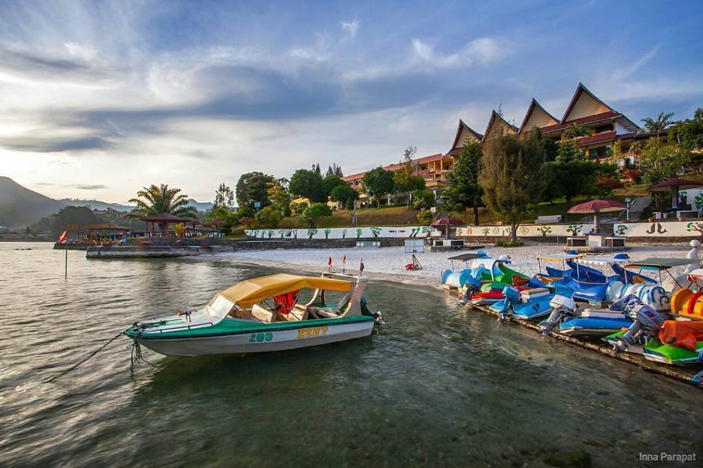

Bukit Sibea bea berada di ketinggian 1.021 meter di atas permukaan laut. Ia menawarkan indahnya panorama alam hijau bersamaan dengan hamparan luas Danau Toba. Kawasan wisata ini sudah dipersiapkan sebagai destinasi wisata modern dengan jalan berkelok-kelok untuk menuju puncaknya. Tidak perlu khawatir, jalan berkelok-kelok ini sudah dirancang sedemikian rupa agar pengunjung tetap bisa menikmati pemandangan alam dengan nyaman saat melintasinya.
Bukit holbung

Bukit Holbung adalah pilihan yang tepat. Sobat Pesona hanya perlu mempersiapkan fisik yang prima karena akan mendaki selama 30 menit. Dari atas bukit, Sobat Pesona dapat melihat panorama Danau Toba yang luar biasa. Selain itu, Sobat Pesona dapat berfoto di antara tanaman ilalang yang tumbuh di sana.
Pulau samosir

inilah salah satu keajaiban yang hadir di wisata Danau Toba. Wisatawan bisa mengunjungi pulau di tengah pulau. Ya, wisatawan bisa menyebrang dengan kapal feri untuk mengunjungi Pulau Samosir. Di pulau tersebut, wisatawan akan melihat berbagai daya tarik wisata seperti pertunjukan Sigale-gale. Selain itu, wisatawan juga bisa menikmati air terjun hingga danau yang berada di sana.
Parapat

Parapat selin indah juga mempunyai segudang objek wisata yang sangat memesona, seperti objek wisata alam, wisata budaya, hingga wisata sejarah yang masing-masing memiliki ciri khas serta keunikan tersendiri. Kota Parapat merupakan salah satu destinasi wisata unggulan.